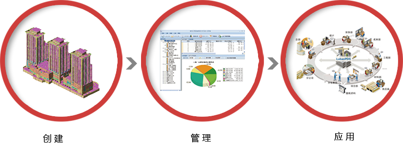
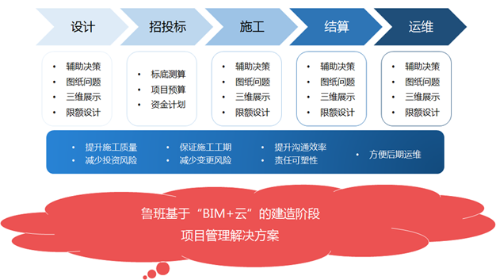
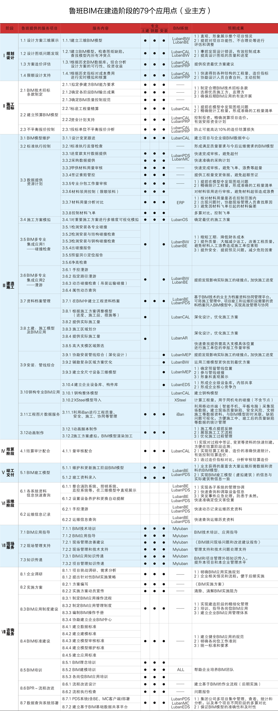
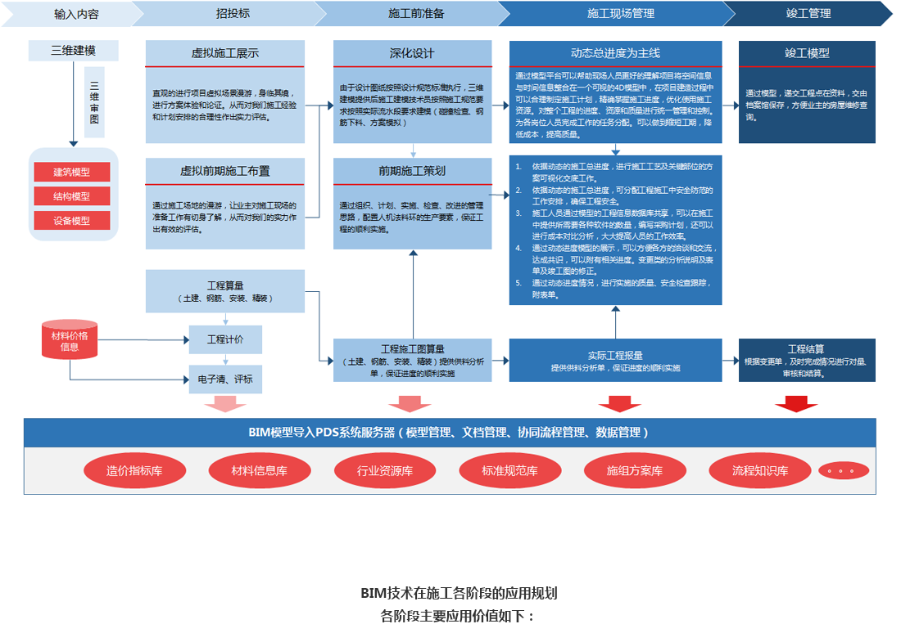

业主方是BIM技术应用的最大受益方，BIM技术的应用可以大幅提升业主方项目管理能力，从而提高工程的投资回报率。
目前的行业形势下，业主方往往要求项目开发有更快的资金周转率，工期能尽可能缩短，由此造成大量三边工程，图纸问题多，反而易造成返工，不仅增加施工企业签证索赔的机会，同时势必延误工期。且越来越多的项目设计复杂，施工技术难点多，投资管理难度大，项目协同管理效率低。引进合适的BIM解决方案可以很好的解决以上问题。
业主方BIM解决方案，是通过鲁班BIM服务和软件系统，利用创建好的项目BIM模型提升设计质量，减少设计错误，获取、分析工程量成本数据，并为施工建造全过程提供技术支撑，确保项目建设在合理的投资预算内按时、保质的建成。
通过业主方建立的BIM平台，可以使项目各参加方，包括代建方、设计、施工总承包、监理单位以及专业分包等都在BIM平台上进行管理共享，并且建立与工程项目管理密切相关的基础数据支撑和技术支撑，大大提升项目协同管理效率。同时，在项目建造过程中不断维护、完善的BIM模型，在项目建成后，可以形成物业运维模型，为项目的运行维护提供数据平台。
业主方可以利用BIM技术在项目建设全过程中的各个阶段发挥价值，从设计阶段到施工阶段，以及建成后的运维阶段，每个阶段都有对应的应用价值。
设计阶段占工程成本决定性因素的70%，设计的质量非常关键。通过建立模型，可以在短时间内随着设计进度快速建立模型，及时发现设计图纸问题，并第一时间反馈给设计院进行修改。
鲁班BIM业主方解决方案可以在设计阶段对设计院各专业的成果进行合并，发现各设计院图纸冲突的地方，协调各设计院进行修改。Luban BIM Works系统提供了自动检测碰撞点功能，可以在短时间内自动查找出模型内所有冲突点。另外Luban BIM Works还可以检查限定高度范围以内的构件，及时发现结构高度过低或者后续机电施工后净高不满足要求的地方。
对于大型投资项目，动辄几十亿多则上百亿，往往对于业主方来说资金压力都会比较大，有些项目公司财务成本每天都要几十万甚至几百万。如何精确测算项目造价，如何有效安排资金计划，成为项目成本控制关键。
建立的BIM模型可以跟时间维度相结合，粗的可以按单体建筑来定义时间，细的可以按楼层、按大类甚至按区域和构件来定义时间。通过计划开始时间和计划完成时间的定义，并结合项目造价就可以快速获得每个月甚至每天的项目造价情况。最后结合合同情况，就可以指定整个项目的资金计划。
通过BIM技术实时展现项目计划进度与实际进度的模型对比，随时随地三维可视化监控进度进展，提前发现问题，保证项目工期。
对于施工进度提前或者延误的地方用不同颜色高亮显示，同时进度计划也支持
Project导入，只要跟模型进行一次关联就可以，后续时间修改可以直接在模型上体现。
基于BIM技术的业主方档案资料协同管理平台，可将施工管理中、项目竣工运维阶段需要的资料档案（包括验收单、合格证、检验报告、工作清单、设计变更单等）等列入BIM模型中，实现高效管理与协同。
在移动终端（智能手机、平板电脑）上安装鲁班BIM系统客户端之一的iBan移动应用，就可以对项目情况实时拍照、上传，建立现场质量缺陷、安全风险、文明施工等数据资料，与BIM模型即时关联形成结构化数据信息，方便施工中、竣工后的质量缺陷等数据的统计管理。这种基于BIM模型定位模式，让管理者对缺陷的位置准确掌控，而且可以利用互联网随时查看缺陷问题，实时掌握现场的质量缺陷安全风险因素。
现在大部分运维管理还是被动式管理，哪坏了修哪，哪个设备坏了再更换。这样就容易产生重大事故以及影响大楼的正常运营。通过竣工BIM模型提供的资料，可以利用BIM模型快速定位查询设备、资料等、设置设备养护和更换自动提醒，把安全隐患控制在萌芽状态。同时，保存的BIM竣工模型可以供后续可能的二次改造查询使用。
以上列举的为业主方BIM解决方案的部分应用点，所能创造的价值已经很大。业主方选择合适的顾问服务单位将BIM技术做深做细、切实落地可以得到5-10倍的投资回报率。鲁班软件16年来一直专注于BIM技术研发推广，经过17年的研发和项目实践，鲁班BIM业主方解决方案在项目建造全过程，通过鲁班BIM系统和顾问团队的服务，可以实现7大阶段、34大项、79个应用点，提高项目建造过程中的各参建方的协同管理效率，提升项目开发的投资收益。
目前，施工企业在项目建设中遇到诸多挑战。由于设计工具和能力的提升，越来越多的项目被设计的更加异形、复杂，技术难点多，工序繁杂，依靠传统的作业方式与技术手段，存在一定的实施风险。同时，现在业主对工期要求都很高，工期一般都比较紧张，如何在较短的工期内完成项目建造与交付运营，对项目参与任何一方都是巨大的挑战。而且，大部分项目都涉及主体结构、钢结构、幕墙、设备安装等专业，管道设备错综复杂。如果依据以往的作业方式进行多专业协同时（二维蓝图交互、交底、审核），审核工作量巨大，图纸错误非常多且事前无法发现，造成返工，成本增加。另外，项目建造投资额度大，上下游结算、进度款支付漏算或错算难以避免。
鲁班BIM施工方解决方案，定位于建造阶段，可以很好的解决以上面临的挑战，是施工方引进BIM技术的首要选择。
施工方BIM解决方案，充分利用设计阶段的设计成果，进行快速、高效的建模，确保BIM模型始终早于实际施工进度，充分发挥BIM技术的预警作用。创建好的BIM模型，上传到BIM系统中进行共享，通过权限设置，施工企业的管理层、各条线、各岗位的人员都能通过相应的客户端（Luban BW、Luban MC、Luban BE或者iBan等）获取模型信息，协助管理决策，最大化BIM模型的价值。
鲁班BIM技术应用流程
通过建立项目级或者企业级BIM平台，使得施工企业相关管理人员都在BIM平台上进行管理共享，并且建立与工程项目管理密切相关的基础数据支撑和技术支撑。基础数据包括：实物量数据、价格数据、消耗量指标数据、清单定额数据等。技术支撑包括设计图纸问题发现、管线综合优化、碰撞检查、施工指导、质量安全管理、进度管理等。在施工建造的全过程中，鲁班BIM施工方解决方案各阶段应用规划如下：
应用云计算的优势，根据重点部位的结构标高，结合深化后的机电综合排布方案，完成项目建造阶段的各专业（钢构、机电、土建结构等）碰撞检查，发现影响实际施工的碰撞点。
1）深化设计：结合现场实际情况、施工工艺需对设计方案进行完善
2）施工方案：根据业主方、监理方、分包班组意见进行的方案调整、具体管道支架调整等
3）结构偏差：结构施工偏差、结构扰度
基坑施工程序复杂，二维设计，解决三维空间超复杂问题，因此风险大，同时工程进度控制难。在整个深基坑施工过程中，材料用量大，工程量统计费事费力，需要应用BIM技术对支撑维护施工方案模拟和审视、土方开挖施工方案模拟和审视、支撑维护结构与土建结构碰撞检查。
利用BIM多维度可视化的特点，对重要施工方案进行模拟。施工方利用BIM模型可向设计人清楚表达了相关修改施工步骤，过程，提高了协同效率。设计人员可根据施工方要求，调整方案，施工方再次模拟。经过多次模拟，可最终确定最优的施工方案。
应用以BIM技术为依托的工程投资数据平台，将包含投资信息（工程量数据、造价数据）的BIM模型上传到系统服务器，系统就会自动对文件进行解析，同时将海量的投资数据进行分类和整理，形成一个多维度的、多层次的，包含可视化三维图形的7D结构化工程基础数据数据库。
管理人员可远程调用、协同，对项目快速准确按区域（根据区域划分投资主体）、按时间段（月、季度、特定时间等）进行分析统计工程量或者造价，使得项目的成本管理在可控范围内。
现代工程经常是典型的“三边工程”，即时依据最新图纸刚做好的施工资源计划，应为最近的图纸要马上做调整。依靠传统的方式，已经很难跟不上这么快的、变化节奏。而应用鲁班BIM技术，可以在2-4小时内，最多一天时间，调整好变更量，依靠鲁班的数据分析系统，快速分析出下一步需要的人材机资源计划，为项目部及时调整部署赢得了宝贵的时间。
可以将进度计划导入BIM模型中，将模型中的构件与施工进度计划进行挂接，并深度整合施工过程中涉及的资源（人力、材料、机械设备）、成本、安全等信息，从而实现多个维度的施工管理。可以WBS、模型进度、资金计划曲线的同步显示，直观了解形象进度，并且查看任意时间点的WBS进度、资金计划、人材、机计划等信息。
由于建立基于BIM的5D实际成本数据库，汇总分析能力大大加强，速度快，短周期成本分析不再困难，工作量小、效率高。比传统方法准确性大为提高。因成本数据动态维护，准确性大为提高。消耗量方面仍会在误差存在，但已能满足分析需求。通过总量统计的方法，消除累积误差，成本数据随进度进展准确度越来越高。
项目实施过程中，鲁班软件将应充分考虑到项目部现有管理人员实际水平，并提出详细的培训方案，以达到能够独立管理和使用BIM软件系统及日常的维护处理能力。培训将按项目部要求提供管理员、普通用户等的培训。
通过培训使项目部技术人员能够熟悉掌握建模软件及模型应用客户端的操作与管理，可以处理常见问题；管理人员能熟练掌握模型应用客户端系统的使用及管理，充分利用模型中的数据与信息对日常工作进行支持。
培训采用集中现场培训的方式，由鲁班BIM工程师对项目部技术人员进行现场培训，培训结果以达到培训目的为准，并设置考试环节，以达到培训目的。
以上所列举的为施工方BIM解决方案的部分应用价值点，鲁班BIM施工方解决方案在400多个国内大型复杂工程项目上实践应用，并获得了委托方的一致好评，例如上海中心、苏州中心广场、苏州传媒广场、上海金虹桥国际中心、上海路发广场、无锡地铁控制中心、常州月星环球金融中心、西咸空港综合保税区项目等施工方建造阶段全过程BIM应用获得巨大成功。鲁班也积累了大量的人才与成熟的实施方法论。
鲁班BIM施工方解决方案经过17年的研发和100余个项目实践，通过鲁班BIM系统和顾问团队服务，可以实现8大阶段、38大项、106个应用点，全面提升项目全过程精细化管理水平，为项目创造巨大价值。